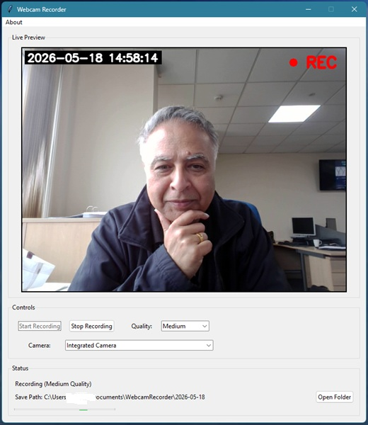
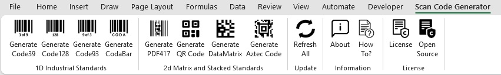

Home
Welcome to my website, hosted on GitHub Pages.
Just a little somewhere that I can share tips, programs, and thoughts that some people may find interesting or useful.
Explore my projectsAbout Me
I am an engineer with a background in Electronics, I studied at Loughborough University (UK) many moons ago, but have expanded my knowledge since through the many years I have worked in the automotive industry. I would class myself as more of a systems or controls engineer, my role is more of a problem solver in a crisis situation. I'm the one that runs towards a situation !I love puzzles, solved the Rubik's Cube back when it was first released in 1980 - Thanks Dad, best present I ever received ! Currently working on getting an 8x8 cube.
I am a huge Trekkie, and also anything Gerry Anderson and Supermarionation - Thunderbirds, Joe 90, Captain Scarlet et al. I think the story lines were brilliant, and some of the acting was better than the actors we have today !!
My Projects
Web Cam Recorder
A free webcam recording application developed as an experiment to
explore how far AI can be used to create a complete working software
application. View the source code and
project on GitHub

Excel Scan Codes Generator
A free Excel Add-In to generate and maintain 1D and 2D bar codes
directly within Microsoft Excel. View the source code and
project on GitHub

Contact
You can find my GitHub page and my projects here View My GitHub Page